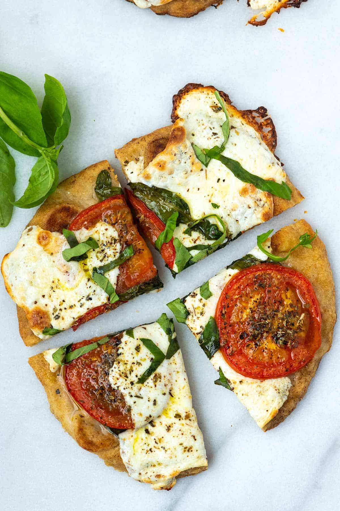

Tasting Italy
The Ultimate Greek Spaghetti with Meat Sauce Recipe-Makaronia me Kima

This dish of Greek spaghetti with meat sauce is known as Makaronia
me kima in Greek. This dish is a favorite among most Greeks, adults,
and children alike. Nobody can resist makaronia me kima, especially
its homemade version. Everybody’s yiayia makes the best one! The
secret in this family recipe, is not only in the sauce but the way
the pasta is prepared. It is not just boiled, instead it is
layered in a casserole dish coated with cheese and warm olive oil.
It is so good, even without the sauce. Today I’m sharing with you
my mother’s famous recipe step by step!
Ingredients
- ⅓-½ cup extra virgin olive oil + 3 tbsp for the pasta
- 1 small onion chopped
- 2-3 cloves
- 2-3 allspice berries
- cinnamon stick
- bay leaf
- 3 garlic cloves cut in half
- ½ cup dry red wine
- tbsp tomato paste
- 1 pound ground beef 70% lean
- 1 can 14-15 oz or 400 g crushed or diced tomatoes or fresh
tomatoes diced or grated
- 1 tsp sugar
- 1 tbsp dry oregano
- 1 package 16 oz or 500 g spaghetti (uncooked)
- Salt to taste
- Pepper to taste
- 4 tbsp grated dried mizithra (Greek aged cheese) or Pecorino
- ¼ tsp of ground cinnamon
Instructions
- In a medium size pot, add about ½ cup extra virgin olive oil,
at medium heat and once the oil is hot, add the onion, cloves,
allspice, cinnamon stick, bay leaves and a pinch of salt.
Sauté until translucent. Add the garlic halves and sauté
1 more minute.
- Add the tomato paste and swirl with a wooden spoon, heating
well. Add the ground beef, pressing it with a fork and heat
until, it is crumbly and no longer red. Add the wine and cook
until evaporated. Add the crushed tomatoes, 1 tsp fine sea
salt, ½ tsp black pepper, 1 tsp sugar and 1 cup hot water,
stir well. Lower heat and simmer for about an hour, checking
water levels and adding a bit of hot water as needed.
Once ready, add 1 tbsp of dry oregano, remove from heat,
remove cinnamon stick, bay leaves and set aside.
- Boil pasta according to directions. Once pasta is ready, strain
and add 1 tbsp olive oil and stir.
- In a large casserole dish spread half the pasta, sprinkle over
the pasta 2 tbsp grated cheese, place a second layer of pasta
and sprinkle 2 more tbsp of grated cheese. Sprinkle over some
ground cinnamon. Set aside.
- In a little pan, heat 2 tbsp of olive oil until it starts to
shimmer. Remove from heat and drizzle over pasta.
- Serve: Serve pasta in a dish and spoon over the meat sauce.
Flatbread Pizza
This flatbread pizza recipe is quick and easy! You can make homemade
flatbread (it’s easy, I’ll show you) or use your favorite
store-bought flatbread.

Ingredients
- 2 flatbread, 6 to 8 inches in diameter, try homemade flatbread
- 1 tablespoon extra-virgin olive oil, plus more for serving
- 1 large tomato, thinly sliced
- 4 ounces fresh mozzarella cheese, sliced
- 8 fresh basil leaves, plus more for serving
- 2 pinches dried oregano
- Salt and fresh ground black pepper
Instructions
- Heat the oven to 425°F (218°C).
- Brush or rub the olive oil over the bread. Layer the sliced
tomatoes, mozzarella, and basil leaves on top.
- Scatter a pinch of oregano over each flatbread, then season
with salt and fresh ground pepper.
- Bake the flatbread pizzas until the cheese is bubbling and
turning light brown in spots, 10 to 15 minutes.
- Serve, cut into slices, with an extra drizzle of olive oil
and a few more fresh basil leaves, torn into smaller pieces,
scattered on top.
Homemade Icecream
I have a well-established love of ice cream, with over 150
ice cream recipes here on the website, and yet I still make
this simple ice cream recipe at least once a month. There’s a
reason why we call this the easiest (and best!) ice cream you
will ever make or taste.

Ingredients
- 1¾ cups heavy cream
- ¼ cup whole milk
- ¾ cup sugar
- ⅛ teaspoon fine sea salt
- 1 tablespoon vanilla extract or 1 vanilla bean split in half
lengthwise
Instructions
- Pour 1 cup of the cream into a saucepan and add the sugar
and salt. If using a vanilla bean, scrape the seeds of the bean
into the mixture and then add the vanilla pod to the
saucepan.
- Warm the mixture over medium heat, just until the sugar
dissolves. Remove from the heat and add the remaining cream,
milk, and vanilla extract (if using extract). Whisk to combine
and chill in the refrigerator.
- When ready to churn, remove the vanilla pod, whisk the mixture
again, and pour it into the ice cream maker. Churn according
to the manufacturer's instructions.
- Immediately or transfer the finished ice cream to an airtight
container and place it in the freezer until ready
to serve.